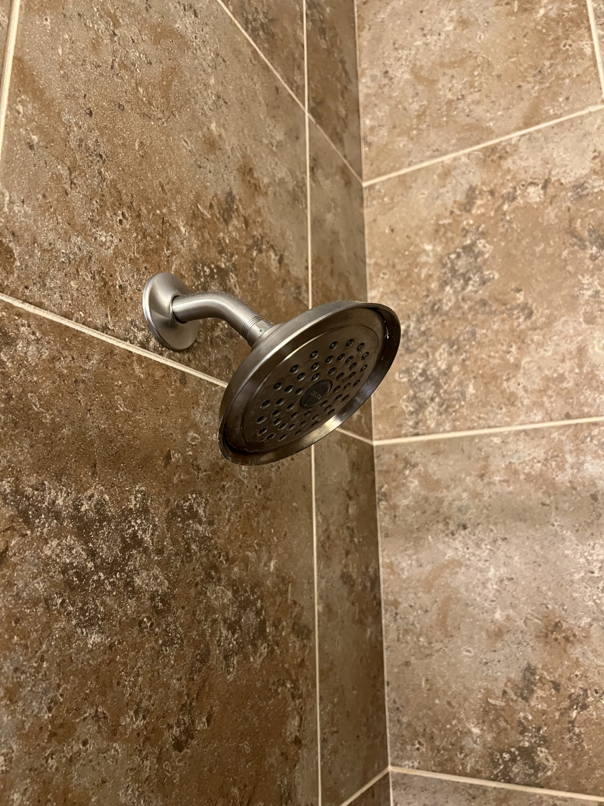

Simple bathroom repairs are sometimes like kitchens. Kitchens have sinks and faucets and so do bathrooms. Common ones include leaking faucets, clogged drains. Turn off the water supply before starting any work. Fix leaky faucets by replacing worn washers or O-rings. An easy repair in the bathroom is to replace a hardened flapper which causes the water to continuously fill the toilet bowl. Adjusting the water level according to the instructions also stops continuing water flow into the tank. Re-caulk around tubs or sinks to prevent water damage and mold. An easy repair is the replacement of the showerhead. This is shown in my photo image below.
